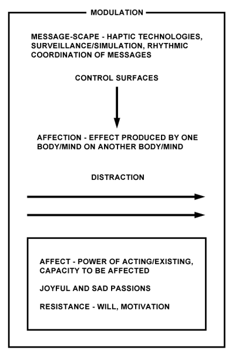

CODE DRIFT
Digital Resisto(e)rs
William Bogard
Lower your shields and power down your weapons. We will add your biological and technological distinctiveness to our own. Resistance is futile. You will be assimilated.
The classic Borg hail....
Many young people strangely boast of being "motivated"; they re-request apprenticeships and permanent training. It's up to them to discover what they're being made to serve, just as their elders discovered, not without difficulty, the telos of the disciplines.
Deleuze, "Postscript on the Societies of Control" [1]
A story about education in the future past:
She didn't have long to wait. Today she got her Motivator?, a small, virtually undetectable device, inserted under the fold behind her ear. The Motivator? syncs your mood with the global mood, the sampled and modeled affects of the planetary multitude. Everyone who is anyone today is fitted with a personal Motivator?, a classy gadget that converts those downer drudge-work feelings into smooth running functions. Real-time parametric controls, networked, tight interface. The optimal output of a "motivator-ed" body is some operational mixture of fear and greed, all you need to get through the day. Add more parameters, adjust the tempos, and generate a whole continuum of real time dynamic effects: optimism, hope, distraction, rage, enthusiasm. Still working on joy, not easy to model that one, but the smile is a nice touch.
So how's it done? How do you command the mood of a whole planet? It's all about controlling counter-rhythms, xonabytes of them. Counter- (or anti-) rhythms are lines of flight that interfere with the calibrated rhythms things need to run these days. What's innovative about the Motivator? is that it can fine tune rhythms in the global mood, like fear and greed, by using your body's own affective resistance to them. It has been known for a long time that fear has a distinctive rhythm. One of the great advances in Affect Engineering (AE), an applied branch of advertising, came with the discovery that affects were responses to the timing of swarms of messages, and had almost nothing to do with the information they contained. What mattered for messages to have an affective impact was their collective beat or vibration. AE found that a body's resistance to message swarms could be integrated into the personalized management of affect in networked populations. Here's how. The Motivator? tracks flight reactions to the rhythms of the swarm and makes small adjustments in the timing of incoming messages for each user (receptor), with the goal of flexible management of the planetary affective system. Yes, fear can be managed... damp it down for one, or a few, inch it up in tiny increments for the rest. Affect engineering, or modulation, governs the entire loop between networks and users. Too much fear in the system? The Motivator? makes billions of tiny calibrated rhythmic adjustments and sends them out over networked populations like an oil slick. Too little greed? Fine tune the frequencies for each user, adjust and synchronize the counter-greed rhythms, the flights of generosity and giving and saving. Now is the time to feel hopeful, or to consume or produce, to be angry or docile. Don't ask who decides the right rhythms. Decisions are only micro-products of a machine that functions, although not autonomously, at least automatically. It's a thing of true beauty. The machine responds to the affective deviations it itself creates. Like any machine, this one works by breaking down. In the end, the Motivator? must fail to control the global mood and thereby initiate its own control function, much like a thermostat must fail to keep constant the room temperature it is designed to regulate. Only the Motivator?'s target moves. A mobile but digitally tethered population -- no longer a multitude -- of six and a half billion tiny interconnected thermostats.
In any case, her Motivator? arrived just in time. The mood across the grid had become increasingly depressed. War, politics, disaster, economic crisis, nothing but a constant drumbeat of sad news. She'd been self-medicating to blunt the effects, but in the end that made it even harder to get up in the morning and go to work, let alone be enthused about it. She was distracted. Of course, this was the way the system always ran, distracting and depressing people until they burned out. Pills could manage the downward spiral for a while, but the Motivator? brought everyone's desire back to productive levels. Thank God for the Motivator?.
With the Motivator? her depression is put to work. Depression, despite its sadness, is in fact a mode of resistance. Even though it devastates a body's energy, it is also an escape line. Too much sadness in any particular user triggers the machine, which compensates by adjusting its personalized settings for the sad passions, each parameter finely tuned and responsive to the socio-chemical multiplicities that comprise the depressive continuum across the population. Now she, and countless others afflicted variably with depression, can go in to work and put on that smile you want, not only in spite of their sadness, their resistance, but because of it. Good morning, can I help you, what would you like with that, how can I serve you (smiley face)? Before the Motivator?, she had to feign that smile. But a smile is not just something you paste on. You have to adjust your whole attitude, keep your enthusiasm and energy up, be happy. You have to know how to use that smile, and how to precisely modulate it. Wide smile, knowing smile, sympathy smile, loving smile. It's a whole affect thing, not just the mouth, or the face... you have to be in sync, on the right rhythm with the messages that engulf you.
Her body resists; she is sad; no quick smile today. But this resistance is integral to the production of a smile nonetheless, in just the way resistance operates in an electronic circuit. Variation in, flexible uniformity out. The assemblage kicks in. Operational depression. Functional sadness, and only the barest simulation of joy.
Control is the modulation of affect by means of varying the resistance of a body.
The system understands, and has long understood, that resistance is the whole point, that resistance is integral to the function of control. Control is the modulation of resistance, and her smile is the function of her body's controlled capacity to resist.
Information, Affect
I am trying to become clear about a problem. That problem presents itself to me as a relation between information and affect, between two lines of variation that differ in nature but that nonetheless flow and mix together. The same information can make a person happy or sad, the affective response is indeterminate. Information does not determine affect, since something immaterial cannot account for a material consequence. Yet to produce any response at all, information, it seems, must carry some affective force or charge. That force is its message. When information conveys a message, when it communicates something, then it does indeed have a determined, if not exactly determinate, relation to affect. This influence can extend even over one's power to act. Who has not felt empowered or disempowered by the force of a message? The problem is how this works.
My approach is not to study the meaning of messages, but their timing and delivery. Messages, of course, have enunciative functions, but they are also assemblages with rhythms, like percussive lines. Those rhythms are synthesized by machines along the temporal interface between information and the body. Control societies manage that interface tactically. For example, if there is a paramount problem for the accumulation and concentration of Capital today, it is how to synchronize transfers of information over networks to the host of personal devices that connect to those networks -- mobile phones, computers, cameras, appliances, automobiles, alert systems, a long list of contraptions. Synchronization of messaging devices, however, is only part of a wider strategic move to manage rhythmic lines of communication necessary to sustain Capital as a global or planetary network. It is not the meaning of messages, but the temporal modulation and rhythmic command of their global intensive quantities -- the continuous, real time adjustments of frequency, compression level, tempo, tuning, volume, reverberation, etc. -- that matters. Ultimately, modulation within control societies is a process of timing the adjustment and delivery of message intensities to support the demands of global economic and political power. These machines interface the body on multiple levels. They are the receivers and transmitters, sensors and jammers, data pads, control surfaces, and catalytic devices that enable everyday life and round-the-clock functionality in network society. For both information and the living body, in the context of postmodern global Capital, they are means of controlling flight, not in the sense of physical apparatuses of capture or enclosure as once employed by disciplinary societies, but rather forms of digital tethering proper to information societies and the message-scape. [2] Like most control strategies, they work by programming and managing resistance, controlling counter-rhythms that they spawn themselves. This process, however, also opens up new lines of flight, new rhythmic possibilities for messages to the outside. We see this everywhere in the free counter-rhythmic swarms of messages that circulate in underground networks, emerging digital commons, and mutant information clouds. Resistance, precisely because control societies mandate it to function, is never futile, and always an open invitation to break free.
From a statistical point of view, information is just the probability of a message's occurrence. The higher the probability, the less information. Even at this level, however, it is already an affective force, a desiring machine and force of production. To give an example to which I'll return, we see how global financial markets today have become no more than networks for gambling on information probabilities (risks, futures, derivatives), i.e., on insurance. It's no surprise that these same markets are also swept away on waves of fear and greed. While the assemblages are new and different, the problem for Capital is not how to modulate the reciprocal relation between information and affect, or how to control their temporal encounters to extract the greatest profit from them. In this project, Capital targets the information-body interface. Tamp down the fear level along this surface, amplify the greed, or just the reverse, more fear, less greed, do whatever works for current conditions. Time information to sync with variable waves of affect in the population, generate mass motivation, and operationalize mass resistance. Aim for round-the-clock functionality. What matters to Capital is the tight, flexible coordination of communications and bodies that feeds the accumulation process. [3]
Messages can excite either joy or sadness, often a complex mixture of both. Our encounters with them are no different from those we have every day with friends and enemies, different kinds of food, or changes in the weather; our capacities to feel and see and think swing with those encounters, our energy and motivation rise and fall with them. Messages are affections that impact the whole, mindful body and its power to act. They accomplish this not just as "message" in the statistical sense, but as medium or "massage" (McLuhan), i.e., as communication. [4] Embodied in communications media, a message's machinic edges interface with the body in ways that produce in it a thousand tiny joys and sorrows. Who has not had both good and bad encounters with messaging devices, not just the information they transmit, but the devices themselves? The rhythmic sweep of fingers across a keyboard, a vibrating phone, a tactile process of assembly and installation. The problem of control of the information-affect relation comes down to the control of communications media, and this, not surprisingly, involves the problem of the media's contact with the body. Herein lies the problem of resistance.
Communication in control societies generates predominantly sad passions. Spinoza defines the sad passions as those that diminish our power to act as full bodies and minds. The joyful passions, on the other hand, increase that power. [7] Communication can be joyous, of course, free from coercion and control. But so much of the time the sheer quantity, volume, and repetition of communications, and the growing number of devices that expose and bind us to them, overwhelm the effort to break away and act or think independently. Simmel observed long ago that, for the metropolitan man, too much information paralyzed one's sensibility and power to act. People tend to resist what they can't process and filter it out. [5] Information control systems target this resistance and adjust it to ensure that selected messages are not blocked out or avoided. Spinoza says that anything that exceeds a body or mind's capacity to be affected is like a poison, and communication, in the excessive ways it deadens sensibility these days, seems to conform to that rule. [6] And so the dilemma, how to escape or flee these systems? An information society that would increase our powers of acting and existing, that would truly connect us together in joyful ways and agree with our capacities to love and openly communicate, would at least have to discover and counter the ways control societies deliver and block messages, i.e., manage their timing and rhythm. Like an antidote to poison.
In his political philosophy, Spinoza points out the perverse need of those with power to produce sad passions in those without power. Today, echoing Spinoza, this is exactly the position of the capitalist media vis-à-vis its consumers. A climate of depression hangs over the field of communications. Everywhere we see the coercive effects of Capital on the capacity of messages and networks to connect people and produce truly joyful affects. There are many varieties of sad passions, but greed and fear are the twin sad poles of Capital. How are fluctuations in the rhythms of greed and fear calibrated to flows of information? Although the assemblages are complex, there is no shortage of examples -- the mantra-like reporting of 9/11, the panicked yet precisely timed messages of economic crises, disasters and wars, pandemics, security risks, celebrity scandals. Then there is the whole 24/7 digital edifice of advertising and solicitation, simulation, the bio-informatization of the body and the multitude -- in short, the integrated global capitalist message-scape. The narrow psychological question of whether information "causes" or "influences" affective behavior misses the whole point. This is a question for advertisers. The real problem is how a mutual resonance of information and affect is established via the interface of messaging machines and flesh. The rhythmic modulation of information and affect is one of the key technological projects of post-disciplinary societies, and a dominant means by which networked Capital organizes its circuits of accumulation and coordinates them with the production of subjectivities. In one of its multiple modes today, subjectivity is just this coordinated adjustment of the intensive relations between information and affect. Although not using his words anymore, this is something that I take to be at the heart of Deleuze's concept of modulation in his essay "Postscript on Control Societies."
Affection, Affect
As Deleuze writes,
Affectus in Spinoza is continuous variation of the force of existing, insofar as this variation is determined by the ideas one has. He means that the idea indeed has to be primary in relation to the affect, the idea and the affect are two things which differ in nature, the affect is not reducible to an intellectual comparison of ideas, affect is constituted by the lived transition or lived passage from one degree of perfection to another, insofar as this passage is determined by ideas; but in itself it does not consist in an idea, but rather constitutes affect. [8]
Deleuze gives the example of how the ideas of two different persons, one of whom I like and the other I do not, can create different affects or emotions in me. These flow along a line of variation to which Spinoza assigns two poles, joy and sadness. The idea of my good friend produces joy in me, or as Spinoza says, moves my soul in the direction of greater perfection, and increases my capacity to act. The idea of my dislikable friend, on the contrary, produces sadness in me. For Spinoza, "sadness will be any passion whatsoever which involves a diminution of my power of acting, and joy will be any passion involving an increase in my power of acting." [9]
Herein, Deleuze notes, lies Spinoza's political question: why are the sad passions apparently necessary, why do those in power always seem to have to inspire sadness in those without power and deprive them of their capacity to act, feel, and think? Behind the despot and the priest, the two paradigms of anti-democratic forces, lies the same desire for control, to enclose everything and set limits to its becoming. And this brings us back to affect.
To say that ideas "determine" affect does not mean that the variation in affect is reducible to the ideas that one has. An idea cannot account for its material consequence, in this case a fall or rise in the power of acting. Only another body can do that. Here we must make a distinction between affection and affect. As Deleuze writes,
An affection is what? In a first determination, an affection is the following: it's a state of a body insofar as it is subject to the action of another body. What does this mean? "I feel the sun on me," or else "A ray of sunlight falls upon you"; it's an affection of your body. What is an affection of your body? Not the sun, but the action of the sun or the effect of the sun on you. In other words an effect, or the action that one body produces on another. [10]
For Spinoza the materialist, action always implies physical contact; there is no action at a distance. Although the idea is determinate for Spinoza, insofar as any movement in the direction of the perfection of the soul requires adequate ideas, it is always a mixture of bodies that affects the power to act in this direction. It is this mixture that is precisely defined as an affection, in contrast to an affect, which is the power of acting as an effect of or reaction to this mixture. It is important not to conflate these two concepts, since for Spinoza, affection, the mixture of bodies, is what diminishes or increases one's power of acting. A particular food may mix with my body in a way that is bad for it and reduces my power to act. It is not my idea of the food that makes me ill, but eating it. But I could have avoided eating it in the first place had I had an adequate idea of what it would do to me. To have an adequate idea of what a mixture of another body with my own body will do is to have the power to act knowledgeably to counter its negative effects, before they have a chance to harm me: don't mix with this, don't eat that, don't say or read this, avoid these people or actions. Likewise, an adequate idea of a body's good effect will increase my power and perfection. This is the kind of knowledge and power, and information, that priests and despots seek to deny us -- to prevent us from having adequate ideas. Why? Simply to hold on to their ridiculous control.
Spinoza's concepts provide many clues for understanding modern control societies. Can we say that information is the idea and has a determinate relation to affect as the power to act but that this power is not reducible to it? If information is to mix with a body, it must be via the machines and material assemblages that communicate it. How do these machines (technical, political, biochemical), in the ways they interface the body and its multiplicity of surfaces, deliver information and adjust the body's response? How do they synchronize that response to the multiplicity of responses in a population, on a planet? How do they modulate collective affect, feeling, mood, and thought? Why do they produce sad passions (fear and greed)? What is their potential, as machines, for producing joyful passions, increasing our power to act, and assisting in the perfection of our souls? (Hello Donna's cyborg!) [11]
I have approached some of the problems of embodied information through concepts of haptic space (borrowing from Deleuze and Guattari) and distraction (Benjamin). [12] Taussig has also suggested ways that information directly engages the nervous system, and thus the whole body. [13] The organization and development of information control systems follows a "haptic" logic that pertains not simply to "touch," its common meaning, but to the modulation of the entire range of feelings, emotions, moods, desires, and other intensive forces. On the cognitive and perceptual side of this problem, Benjamin's work on mechanical reproduction is a clue to the idea that modern information systems can function as distractors, directly engaging the body and mind in a mode of being (distraction) suited to the accumulation and reproduction of Capital, again immediately embodied in experience. Finally, information affects the will, in the sense of the capacity to resist a decrease in our power, and to act the reactive forces (information is a reactive force that can both increase and decrease one's power). Indeed, at both molecular and molar levels, modern information systems incorporate resistance into their very function. As Foucault says, power is resistance. [14]
Digital Resisto(e)rs
The connection between electronic resistors and political resisters is more than a metaphor in control societies. Both types of resisto(e)rs carry flows of information from the media. Both are hooked to assemblages that continuously re-calibrate their outputs. In the case of electronic resistors, these outputs are regulated voltages; for political resisters, for whom today so much intensity revolves around the control of their own bodies, they are managed affects. We need to understand the literal and material connections between digital economies and political economies, not merely point out their resemblance or structural similarities (in fact, they do not resemble one another at all). They do not so much look alike, as resonate together. The problem of a material relation between information economies and political economies can be approached through a concept of resistance. Resistance has a special meaning in control societies, since political resistance is directly tied to the control of digital information. This is even more true when we consider how information is delivered to, and extracted from, bodies. How, for example, does the political body resist information technology that decreases its power of action? How is resistance to information functionalized and integrated in control societies? These are questions that have nothing to do with the structural resemblance of systems, but rather their actual and potential relations as complex machinic assemblages.
Resistance is power. It is the capacity of bodies to act (and counteract power). From the point of view of communications control, resistors are devices that impede the flow of current through a circuit, creating a drop in voltage between two points. Resistors are necessary and functional components of modern electronics, and communication networks would be impossible without them. They rely on Ohm's Law, which maintains that the voltage shift or potential difference between two ends of a conductor is held in proportion to the current moving through the conductor. [15] We are, quite literally, all conductors of information today, all communication channels. We are all digital resisto(e)rs.
Ohm's Law describes ideal resistors, those that cannot exist in the real world. But in nearly all cases, the approximation is close enough to the real value to be treated as though it was exact. The reason that resistors in the real world cannot function in perfect accordance with Ohm's Law is that in any given situation a range of external variables, including heat, distortion, and noise, all minutely affect the flow of current through a resistor.
There are several different types of electronic resistors, of which the most widely employed are fixed-value and variable resistors. Fixed resistors are simply basic resistors with a value that stays constant. A variable resistor is a simple resistor, but its value may be adjusted by means of a control. A potentiometer is one type of variable resistor than can be manually or automatically adjusted. [16] The way this device works is relatively simple. One terminal of the potentiometer is connected to a power source. Another is hooked up to ground (a point with no voltage or resistance and which serves as a neutral reference point), while the third terminal runs across a strip of resistive material. This resistive strip generally has a low resistance at one end; its resistance gradually increases to a maximum resistance at the other end. The third terminal serves as the connection between the power dial or knob or lever. The user can adjust the position of the third terminal along the resistive strip in order to manually increase or decrease resistance. By controlling resistance, a potentiometer can determine how much current flows through a circuit. When used to regulate current, the potentiometer is limited by the maximum resistivity of the strip. The power of this simple device is not to be underestimated. In most analog devices, a potentiometer is what establishes the levels of output. In a loudspeaker, for example, a potentiometer directly adjusts volume; in a TV monitor, a potentiometer controls brightness.
We should ask, what are the knobs and dials that modulate the collective political body, that control its affective rhythm and resistance? In some ways, this is not a difficult question. I am touching one now, my computer keyboard, and staring at a screen. I am online and taking my pills.
Later someone will induce me to sacrifice my blood and bones to the machine, my eyes, my touch, my inner sense. I will become the dial itself, an informated, modulating body, the digital resisto(e)r in a controlled flow of messages.
Again, none of this is metaphor, but a pata-physical observation on our future past, a science fictional meditation on our historical and embodied relation to communication assemblages. Deep in nerves and muscles and bones, information does its work. I am not just attached to the machine, the machine is me, the medium, noise in, variable through, uniform out. Sad, sad vibrations this process produces -- fear and greed, distractions in every direction. What form of will, what kind of communication, can resist these viral forces at the very moment it conducts them?
Part of the answer to this question is easy. New rhythmic lines emerge all the time to counter the sad drumbeat of the message-scape -- new techniques of messaging, new flights of art only made imaginable by digital media devices, underground networks that give away information for free, new digital commons that move like swarms, spontaneous waves of online collaboration. Viewed temporally, these counter-rhythmic and even a-rhythmic projects are deterritorializing forces immanent to the control systems that draw on them to function. Digital resisto(e)rs have been part of control societies from the beginning. Despite being immanent to a sad system, they are also its subversive, joyful noises.
The other part of this question is harder. What exactly constitutes a counter-rhythmic message? How is it constructed or synthesized? Counter-rhythms are ways that time takes flight, the moments it breaks free of rhythmic control. Free time, as opposed to formal time, synchronized time, metric time, programmed time, segmented time. Free rhythms are improvised and connect to temporal lines that unfold outside the system, a feat programmed rhythms are incapable of accomplishing. Digital life today is so much about scheduled times of connection (the rhythms that command when to plug in, turn on, tune in). Digital life is subjected to synchronized multi-tempo-ed message lines (the rhythms of response to multiple messages arriving at different speeds). Most of all, digital life is about micro-calibrated, programmed repetitions. Slight modifications of the rhythmic pace of messages, slowing them down or speeding them up, small adjustments in their rates of compression and decompression, minor modifications to the lengths of repeated segments, all of these can change the whole feel of a communication, its intensity, the sense of its novelty and importance, its resonance and relevance, its beauty. Counter-rhythmic, joyful messages are always present in sufficient quantities in the control system to overturn it because the system produces them as something to control. But it is counter-rhythms that really set the temporal rules for the system, and that force it to continuously adjust its settings. What are vital are rhythms that are carried beyond their systemic, programmed reproduction and repetition, no matter how flexible and efficient this system is designed. We create these rhythms to the outside all the time, as part of our natural resistance to sad or dangerous messages. Joyful messages, for good reason, are often called upbeat. Rhythmically, they are light and fly unpredictably. Surprising and untimely, they resist codification despite the system's best efforts to simulate and control them. In control societies, we are all digital resisto(e)rs, and resistance is not futile.
Beware of models

Beware of models, especially the ones with nice straight lines and boxes, like the one above. Imagine it folded, cut up, and hung as a mobile, or set on fire.
Deleuze claims that modulation is the logic of control societies. [17] Unlike disciplinary societies that "mold" individuals into fixed forms and serialize their transfers from one rigid control space to the next (school, work, home), control societies "dividualize" bodies and modulate control spaces. They dematerialize the tethers that once bound us to disciplinary spaces, and free us, with ingenious messaging technologies, to roam where they command. Digital territories surround and enclose a flowing, moving multitude without passwords. As part of this multitude, you must have a password to access anything today. But how you obtain one is another story. Control societies dividuate in the sense of exercising selective, flexible control over codes. Once again, flexible control over codes. Your password, your code, and consequently that fractal dimension of your digital life -- as consumer, worker, traveler -- can as easily be revoked as granted, and changed at the stroke of a key or the flick of a switch. This reflects a dream of absolute control, because Capital forces you to use its codes and passwords, in fact it makes you buy them from it, and it also retains the power to modify them at will (digital proprietorship). Passwords impose a regime of completely flexible and immaterial but impermeable boundaries. Wrong password, sorry, no access or exit, but only for now, just this time or next, and this place or that... and then in an instant those codes, those locks, could change.
If modulation is a logic, it is also a concrete assemblage whose mutative effects are distributed across bodies and populations. Deleuze relates it to motivation as a form of demographic control. Young people today, he writes, strangely boast about being motivated, demand permanent training, etc. [18] This is not just a case of false consciousness. Digital control is directly tied to a will and a positive power to act. Control societies bind that will to communications media and, to the extent that they support a system of accumulation fueled by fear and greed, envelope the body in sad passions, training it and draining it of life at the same time. Rather than powers of positive becoming, networks and communications become forces of continuous education and readjustment. No longer limited to physical spaces, control can follow a moving population wherever it roams. Confinement and enclosure have new meanings in these societies -- control without walls, wireless tethers, engineered chromosomes. Move wherever you like, within the confines of bio-electronic coils in which you are permanently wrapped. The younger generation, Deleuze writes, will have to find its own ways to escape these coils, much like earlier generations had to discover ways to resist the physical, serialized controls of the disciplines. Only now the problem is discovering ways to flee forces that use the body's own powers of resistance against them.
A modulation is the adjustment of an intensive relation between information and affect. Modulation functions via the message-scape, the complex assemblage of messaging systems and networks, to effect a mutual resonance of independent lines of variation composed of information and affective responses. This achievement involves a complex problem of rhythmic coordination, i.e., mixing separate and multiple rhythmic lines. More than simply confining bodies, which was the program of disciplinary societies, control societies demand the precise yet supple timing of feelings, moods, and emotions in a mobile society to synchronize or otherwise rhythmically coordinate with information emanating from the control system's own networks.
The rhythmic coordination of information and affect is an intensive project; it involves the timing and repetition of accents, beats, pulses, pressures and releases, special effects (reverberation, overdrive, distortion, etc.). These are all projects of modulation immediately directed to affective capacities and the production of joyful and sad passions. Rhythmic elements of communication can be compressed or stretched, concentrated or diffused, contracted and retracted, varied in speed, tone and timbre, amplified. It may sound strange to connect information to pressures and other intensive variables. But not at all: anyone who has danced to music has felt the connection of rhythmic information to affect. Rhythm is the ecstatic contact of surfaces, and the repetition of that contact -- drum heads and instruments to hands, feet to floor, vibrations of the air against the inner ears of musicians and dancers, bodies against bodies, generating patterns of pressure and release. It takes possession of the whole bodies of the dancer and the performer, and their affective relation. The rhythms pass from surface to surface, along the interfaces of bodies, extracting intense feelings and powers. [19]
Was it the image of 9/11 or its intensive modulation, its rhythmic drum and drone, its over-amplification, its hyper-compression, eventually its implosion into the masses, that produced such intense reverberations of fear and insecurity in the population? Add dark music to those images, flashing lights, close-ups and color enhancements, and ratchet up the volume, again and again, until affective energies are effectively distracted and drained. The pressures of a message are literally the pressures passed along the surfaces over which it passes. What are the surfaces of its transmission? Can any message be interfaced to the body in these ways? Do we dance to news? Do we dance to (with) the rhythm of our phones, and computers, and card swipes, and identity scanners?
Modulation encompasses the entire matrix of relations between the message-scape as affection, the production of affect, and the will/motivation to act. There is undoubtedly a better term than "message-scape," since it is neither a matter of a "scenery" nor a unified enunciative medium, "the message," but rather a complex network of information delivery and extraction systems. For now the term "message-scape" will do, since the term is less important than describing how these systems interface/interact with the body and regulate its affective capacities.
We should think of the interface of the body and the message-scape as a complex control surface that is continuously redesigned and re-engineered. A "control surface" is any machinic interface that modulates information and generates a continuously regulated output. Control surfaces can be almost anything -- a computer keyboard, a chemical link in a chain of molecules, the grips of an exercise machine, a signal mixing board. As a musician who sometimes plays on a synthesizer keyboard, I think of relations of surface tensions between fingers and hands, weighted and counterbalanced keys connected to touch-sensitive parametric control pads that feed into computer sound banks, and how the result is calibrated sound and rhythm and affect. Control surfaces include screens and sorting devices of all sorts, anything that monitors, filters, and modulates information. Resistance, literally as pressure and counter-pressure, is an integral element in the design of control surfaces, and in the formation of control societies more generally, since it is precisely what is varied to achieve a regulated output. Control surfaces are essentially potentiometric arrays, i.e., matrices of variable resisto(e)rs (electronic, machinic, flesh) that modulate and convert flows of information into affective discharges.
Control surfaces come with built-in instructions. They are in a real sense the material embodiment of codes, like the programmed data entry keys on ATMs, or the monitoring pads applied to the skin of hospital patients, ergonomic and prosthetic devices. In the sense that they involve contact pressure, body to body, control surfaces are "haptic." Haptic control, as I said before, is not just the control of touch, but rather a technical and social program for the adjustment of sensibility as a whole, including proprioceptive awareness, the body's internal sense of its own position and movement relative to the outside world. Part of this program does indeed involve the development of technologies that reproduce or simulate the sensation of touch, but the full project of haptics is regulation of the entire continuum of perception and affective response. [20]
In that sense, the body itself is a control surface in this program. More accurately, the control surface is the haptic interface of the body and information. The whole point of affective control, at least within the historical and political context of control societies, is to dampen the will and the power to act, to limit the body's resistance as a surface of control.
The surfaces of bodies are literally resisto(e)rs in the transmission of messages -- they are functional components of the assemblage. This does not imply any kind of technological determinism, only suggests how the assemblage works. In fact, resistance is always the expression of an opening or crack in the machine, the line that opens when it breaks down, even as it supplies a necessary function of the assemblage. No machinic assemblage is ever closed or determines action in an absolute sense, it always opens to an outside.
The body-information interface is the surface on which affection (now as rhythmic message) and affect intersect, and this is the relation that is subject to manipulation and control. Just as we avoid eating things that are bad for our health, we resist those affections that diminish our power to act. Spinoza, once again, saw the relation of affection to affect as a question of the will. The desire of those in power is to check and diminish that power in others. He viewed the diminution of the power to act as tied to the production of the sad passions. An affection is the effect of one body on another body. When we say we are affected by information, have an affective response to information, we are referring to how we embody that information. The body-information relation actualizes as a material control surface for the modulation of messages to determine affect and will. The control surface is itself a field of potential resistance. This surface has the potential to connect to the outside and amplify the body's power to act (hello again Donna Haraway), but today, in the context of control societies, it is mostly a field for the play of sad passions.
How is all this connected to rhythm? Once again, take the examples of fear and greed, the dominant affective poles of Capital. An elaborate network of distractive mechanisms supports the production of these affects. In the twentieth century, Walter Benjamin viewed perception in the mode of distraction as a necessary function of art in the age of mechanical reproduction. This is even more so today. Distraction in the form of messages timed to manipulate receptive faculties and control fear and greed is the strategic logic of capitalist media. In the end, the power of the modern media to distract us has less to do with the information it broadcasts than its affective timing. Distractions, precisely, are breaks in rhythms, breaks in the operation of messaging machines, which is to say, they are points of affective change. Of course, distractions are not unique to control societies. They are social-historical forces, strategies and tactics directly productive of power and powerlessness. Sun Tzu, for instance, reminds us of the strategic importance of distraction in the conduct of war in ancient history.
In any case, a control surface is an assemblage that transforms resistance to control into a function of control. Its purpose is to modulate the affective outputs of the body (its feelings, its power to act) and, to the extent that bodies can merge with the message-scape, to mobilize the intensive energies of entire populations that are, in all other respects, unconfined and mobile.
Mood enhancing pharmaceuticals are a good example of modulation. Take a pill wherever you are and adjust your body's resistance to information emanating from its external or internal environment. Take a pill, and the chemical reaction will return you to normal, where normal is a variably calibrated value. The timing and dosage depends on the force and quality of your resistance. Variable resistance is both necessary and functional in this system. The transmission of the "message" encoded in the pill depends on the mismatch of the output with the norm. This is not an equilibrium model, however, but one that demands that resistance levels be permanently maladjusted to their milieus and subject to adjustment.
By science fiction standards, pharmaceuticals are primitive modulation devices, and we can easily invoke future assemblages that will work more invisibly at the root level of affect. Your Motivator? is on the way, always on the way. The point however, as Deleuze notes, is not the technological example or some futuristic vision, but rather the abstract machine, the machine of modulation and control. [21] We can find almost too many examples, but for every one of them, variable resistance is the goal, or in other terms, a program to convert the body into a communication control surface and regulate its capacity to resist, and for that we don't have to imagine anything more than the mundane operations of Capital today.
Affect and High Finance
What forces are we being made to serve today? A Marxist critique of the 2008 crisis in global financial markets would be instructive in many respects, not least for its class analysis of the crisis, of the role of financial institutions in the theft of even more wealth from workers and the poor, the massive numbers of women and children thrown into poverty and servitude by the cavalier trade in financial instruments, the growing insecurity and precariousness of life for the huge majority of the world's population as what is common to all -- language, dignity, air, water, food, work, freedom, everything needed to survive -- is offered up to the gods of accumulation and profit and war. For whatever reasons, Marxism is not too interested in the affective dimensions of the crisis, even though fear and greed have long been the driving forces of Capital, and they are even more intensively conveyed over digital networks today. Marxism's measure of value in the end remains extensive, not intensive. Even use value, the qualitative and arguably affective pole of the commodity, is limited by a formal theory of needs that is at best indifferent to their singular intensities and wavelike propagation.
There has been a debate within Marxism about the status of information economies, whether they are somehow fictitious or not. [22] Right away, the question is posed wrongly as a dialectic between fiction and reality. This question sees the financial crisis as an extension of the value crisis in the real economy, a view that frames the crisis in terms of Capital's ability to drive down labor costs and stave off falling rates of profit, instead of a crisis in Capital's ability to control the affective values of communications networks. Because real and fictional economies are viewed as opposed to each other, Marxist thought, even in its updated modes, cannot grasp Capital as a machinic multiplicity across which powerful affective energies are mobilized.
The problem is not the difference between fictitious and real economies, but the machinic surface where immaterial and material economies mix functions. One side of that surface faces information, the other the body. This is the intensive surface of control. Even if it is entirely driven by the speculative value of information, financial capital has never been a fiction. It is a machine whose inputs are noise and whose outputs are fear and greed. In between there is a control surface that translates a field of messages from one that cannot be valued in either economic or affective terms into one that selects and syncs messages to time with mood swings in populations. What kind of rhythmic information produces the fear and insecurity necessary for markets to operate? What low drumming of dark rumblings on the horizon, behind your back, overhead...? What polyrhythms produce greed and other corruptions, the ecstatic desire for more? It has long been known that financial markets move in rhythms, but the concept of rhythm has been reduced in these theories to a metric. Economic cycles are recorded in years and market ratios and other equivalences. But where are the affective rhythms of the market, the incomparable waves of panic or the feeding frenzies that fuel the circulation of financial information?
Financial speculation, as many have noted, is a kind of gambling. As his luck changes, a gambler oscillates between the greed that makes him believe he can win everything and the fear of losing it all. It is all about controlling this oscillation to manage risk. Apply this to finance. Absolute fear is bad for the economy because it creates too much resistance to risk... However, some fear is necessary to deter risk-taking that could crash the market. The problem of financial risk, from the point of view of affect, is essentially a problem of finding the right mix of fear and greed, and this is a problem of adjusting the rhythms of communication, no matter what may be a particular communication's fictional or real relation to Capital. The most recent crisis of financial capital could be seen as a failure of the machine to control the value of information, where value has not just an economic sense but an affective one as well.
We could put this in the economists' language. For them, markets are like other natural phenomena -- they ebb and flow. Measuring their time cycles can help assess the probability of a market making a trend reversal. Market analysts of finance have long been aware of the existence of market cycles.
Financial market cycles are thought to relate to the behavior patterns of individual market participants acting en masse, e.g. as a crowd or a population. Investor sentiment continually changes in a limit cycle -- moving from greed, which causes prices to rise, to fear, which causes prices to fall.
A knowledge of cycle theory can be used to measure this "natural" rhythm of markets, and this information may be used for timing and entering a trade. Of course, this rhythm is anything but natural. It is a sociotechnical machine, and the measure of its knowledge is metric, not intensive. Nevertheless, almost despite itself, it produces a myriad of affects, and it does so by attempting to anticipate and control the so-called natural rhythms of the market. What is crucial is knowing in advance when the market starts to turn, when fear begins to switch to greed. The rule is to be greedy when others are fearful, and vice versa (Warren Buffet's mantra). All manner of tactics are employed in this process, but suffice it to say, computer modeling, speed, and networks are central to its function. Financial manipulation of the markets is a determined effort to adjust affective rhythms before they unfold, and buying and selling at the anticipated rhythm of exchanges has just that effect.
Despite buying into the fictitious-real dialectic, Marxism today, to its credit, recognizes that it is problematic to try to separate immaterial and material forms of capital, and that Capital has reached a kind of limit where uncertainty about this separation has exposed a limit in Capital's ability to control any values. The cost of information, especially information about the future value of financial instruments that bear virtually no relation to the material productive forces from which they derive, and which can be almost freely reproduced, traded and distributed over digital networks, has become almost impossible to calculate or fix. Even the most orthodox Marxist critique of Capital today recognizes that we are entering a radically new phase of production in which the relative autonomy of the so-called real economy is at stake.
We read about the "culture of fear," risk society, or climate of terror. All these concepts make an effort to theorize the relation of information to affect. But they all lack a mechanics, and they do little to explain how information is embodied. The integration of computer networks and biopower technologies over the last 60 years, and its dominant role in how Capital structures accumulation today, has made this theorization all the more urgent. Today, communications networks remain closed, demand passwords and codes, and fall under the control of corporate and state powers that would use resistance to further their domination of affect. Sad passions. It is also true that resisto(e)rs are discovering new ways to break digital enclosure, bypass codes, and free the flow of information, to increase the joyful passions and the power to act. Much work remains to be done.
Notes
-------------------
[1] Deleuze, Gilles. 1992. "Postscript on the societies of control." October 59(Winter): 7. (All further notes on this article refer to this reference).
[2] Bogard, William. 2007 "Coils of a Serpent: Haptic Space and Control Societies." CTheory http://www.ctheory.net/articles.aspx?id=581
[3] Cf. Hardt, Michael, and Antonio Negri. 2004. Multitude: War and Democracy in the Age of Empire. New York: The Penguin Press.
[4] McLuhan, Marshall, and Quentin Fiore. 1967. The Medium is the Massage. New York: Random House.
[5] Simmel, Georg. 1903(1964). "The Metropolis and Mental Life." The Sociology of Georg Simmel. Edited and translation by Kurt Woolf. Glencoe: Free Press: 409-417.
[6] Cf. Deleuze, Gilles. 1988. Spinoza: Practical Philosophy. San Francisco: City Light Books; also Deleuze, Gilles. 1978. "Lecture Courses on Spinoza's Concept of Affect." http://www.webdeleuze.com/php/sommaire.html
[7] Deleuze, Gilles. 1978. "Lecture Courses on Spinoza's Concept of Affect." http://www.webdeleuze.com/php/sommaire.html. All subsequent references refer to this text.
[8] Deleuze, 1978.
[9] Deleuze, 1978.
[10] Deleuze, 1978.
[11] Haraway, Donna. "A Cyborg Manifesto: Science, Technology, and Socialist-Feminism in the Late Twentieth Century," in Simians, Cyborgs and Women: The Reinvention of Nature (New York; Routledge, 1991), pp.149-181.
[12] Bogard, William. 2005. "Distraction and Digital Culture." in Life in the Wires, edited by Arthur Kroker: CTheory; Bogard, William. 2007 "Coils of a Serpent: Haptic Space and Control Societies." CTheory http://www.ctheory.net/articles.aspx?id=581; Deleuze, Gilles and Félix Guattari. 1987. A Thousand Plateaus: Capitalism and Schizophrenia. Minneapolis: University of Minnesota Press: ; Benjamin, Walter. "The Work of Art in the Age of Mechanical Reproduction"
[13] Taussig, Michael T. 1992. The Nervous System. New York: Routledge: 10.
[14] Foucault, Michel. 1982. "The Subject and Power" in Michel Foucault: Beyond Structuralism and Hermeneutics. Edited by Paul Rabinow and Hubert Dreyfus. University of Chicago: 208.
[15] "What is a resistor?" http://www.wisegeek.com/what-is-a-resistor.htm
[16] "What is a potentiometer?" http://www.wisegeek.com/what-is-a-potentiometer.htm
[17] Deleuze1992: 3.
[18] Deleuze 1992: 7.
[19] Cf. Turetzky, Philip. 2002. "Rhythm: Assemblage and Event." Strategies: Journal of Theory, Culture & Politics 15(1) : 121 ? 138.
[20] Gibson, J. J. 1979. The Ecological Approach to Visual Perception. London: Houghton Mifflin; Paterson, Mark. 2006. The Senses of Touch: Haptics, Affects and Technologies. Oxford: Oxford University Press; Salisbury, K. 1995. "Haptics: The Technology of Touch." HPCwire Special. Nov. 10, 1995; Hodges, M. 1998. "It Just Feels Right." Computer Graphics World 21; Porter, Lake and Jutta Treviranus. 2006. "Haptic Applications to Virtual Worlds." University of Toronto Adaptive Technology Resource Centre; http://www.utoronto.ca/atrc/rd/vrml/haptics.html; Marks, Laura U. 2004. "Haptic Visuality: Touching with the Eyes." in Frameworks 2:1. http://www.framwork.fi/2_2004/visitor/artkkelit/marks.html.
[21] Deleuze 1992: 6.
[22] McNally, David. 2008. "From Financial Crisis to World Slump: Accumulation, Financialization, and the Global Slowdown." Full text at http://marxandthefinancialcrisisof2008.blogspot.com/2008/12/david-mcnally-from-financial-crisis-to.html
----------------
William Bogard is Deburgh Chair of Social Sciences at Whitman College and the author of The Simulation of Surveillance: Hypercontrol in Telematic Societies (Cambridge University Press, 1996). His writings on digital media theorize its potentials for embodied control and resistance. His recent work explores the relation of information and affect within the context of control societies, and the machinic integration of electronic and political resistance in circuits of networked capital. He is currently writing a paper about control surfaces.